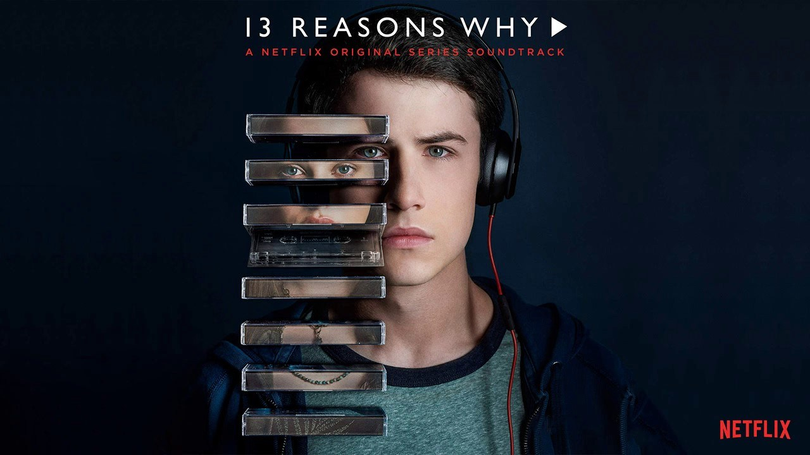

13 Reasons Why
A série 13 Reasons Why, uma série drama adolescente, tem como um dos personagens Clay Jensen, um estudante que, volta para casa da escola um dia, e encontra uma caixa misteriosa deixada em sua varanda. Dentro da caixa, ele encontra sete fitas cassetes, de dois lados gravadas por Hannah Baker, sua colega de escola e amor não-correspondido, que tragicamente cometeu suicídio há duas semanas atrás.
Na fita, Hannah desenvolve um diário de áudio emocional, detalhando os treze motivos pelos quais ela decidiu se suicidar. Suas instruções são claras: cada pessoa que recebe a caixa é um dos motivos pelos quais ela se matou. E, depois que cada pessoa termina de escutar das fitas, ela deve passar a caixa para a próxima pessoa. Se alguém decidir quebrar a corrente, um outro conjunto das fitas será vazado para o público. Cada fita se dirige à uma pessoa específica em sua escola e detalha o envolvimento da mesma em seu suicídio.
A série possui a primeira temporada, com 13 episódios, lançada em 2017 e existem projetos para exibição da próxima temporada para os próximos anos.
Elenco
- Dylan Minnette como Clay Jensen
- Katherine Langford como Hannah Baker
- Christian Navarro como Tony Padilla
- Alisha Boe como Jessica Davis
- Brandon Flynn como Justin Foley
- Justin Prentice como Bryce Walker
- Miles Heizer como Alex Standall
- Ross Butler como Zach Dempsey
- Devin Druid como Tyler Down
- Amy Hargreaves como Lainie Jensen
- Derek Luke como Kevin Porter
- Kate Walsh como Olivia Baker